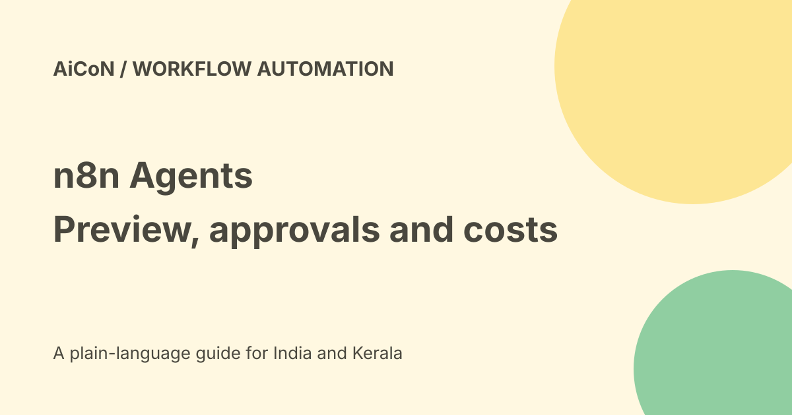

n8n Agents: preview setup, workflow tools and separate credit costs
n8n Agents are a new way to build assistants alongside workflows. You choose a model, instructions and tools; the agent works out the steps for an open-ended request. Current documentation lists Agents as Preview on all Cloud plans and self-hosted plans from version 2.32.3. This is different from the older AI Agent workflow node, which remains available.

Agent or fixed workflow?
A workflow suits a defined sequence: receive a record, validate it, update a field and return a result. An agent suits a request where the next step depends on what it finds.
Neither is automatically better. Keep predictable or sensitive work in narrow workflows, and let an agent choose between only the approved tools it needs.
What the new Agents include
The official documentation describes a model, instructions, tools, skills, knowledge, memory and other agents. Channels and schedules take effect after publishing.
Session memory keeps the current conversation. Episodic memory for earlier sessions is optional and needs an OpenAI credential according to the checked documentation. Uploaded knowledge also has deployment-specific requirements.
Workflows become tools
An agent can call a workflow in its project, a built-in integration, custom tools or an MCP service. A workflow can also call a published agent through Message an Agent.
This lets you offer a narrow action, such as adding a note, without exposing every possible action in a service. Review the credentials and parameters behind that action, not only the agent's written instructions.
Preview and access
The current docs say Agents are on by default on all plans, including Enterprise, unless an administrator disables them. Self-hosted Agents require a supported version and setup.
The launch blog describes Enterprise preview with more governance coming. Documentation is more specific than an older rollout phrase. Check your instance, version and actual licence instead of treating every feature as identical across plans.
A cautious first setup
- Open your project and the Agents tab.
- Create an agent, name it and choose a supported model.
- Write a narrow task and explain what it must not do.
- Add one or two tools using approved credentials.
- Require approval for sensitive writes or communications.
- Use non-sensitive sample knowledge where needed.
- Test the draft with valid, ambiguous and denied requests.
- Read session logs, tool inputs, outputs and errors.
- Publish only after the tests pass.
No account, agent, channel or workflow was created for this article.
Drafts and published versions
Edits are saved in a draft. Publishing snapshots the draft for live use, so an unfinished edit does not immediately change what colleagues use.
Review restore, revert and unpublish options before a production rollout. If Agents are disabled, active runs can finish while new runs stop; saved schedules can resume after re-enabling without replaying missed triggers.
Three different cost buckets
One agent turn counts as one execution and shares the workflow execution quota. The launch says calls to workflow tools and other agents do not count separately within that turn.
Assistant credits pay for using n8n Assistant to help build. Gateway credits pay for supported model or service calls through the gateway. These balances are separate. Buying Gateway credits does not add Assistant credits.
Current Cloud price, not unlimited free use
The pricing page lists Starter at twenty euros per month billed annually, with 1,600 Assistant credits per month. At Wise's checked rate of about₹108.6 per euro, that is roughly₹2,172 monthly equivalent before taxes or conversion fees, not an Indian checkout quote.
The original post's 2,300 AI-credit wording is not the current Starter Assistant allowance. Verify annual commitment, execution quota, model usage and renewal price separately.
A Cloud trial is limited. The pricing page lists 1,000 executions, 800 Assistant credits and 100 AI credits. Gateway docs explain that trial users cannot top up until upgrading. Trial terms can change.
Self-hosting and India
The Community edition is available to self-host, but servers, maintenance and model-provider usage still cost money. Self-hosted Assistant uses your own key; Gateway credits are not available there.
Cloud data location is described as Frankfurt in the pricing FAQ. That does not prove every connected provider keeps data there. No India-only hosting, Malayalam quality or Indian payment checkout was tested.
What changed since the original post?
We distinguish the new Agents from the old node, preserve Preview status, replace the old credit figure and separate executions, Assistant usage and model-service costs.
Frequently asked questions
Does the old AI Agent node stop working?
No change is announced for it.
Is self-hosting entirely free?
No. Infrastructure and provider usage remain your responsibility.
Should sensitive actions be automatic?
Start with narrow tools and human approval.
Sources: Official Agents launch · Current Agents documentation · Current pricing and trial · Gateway credit boundaries · Approximate EUR conversion. Checked 7 October 2026.